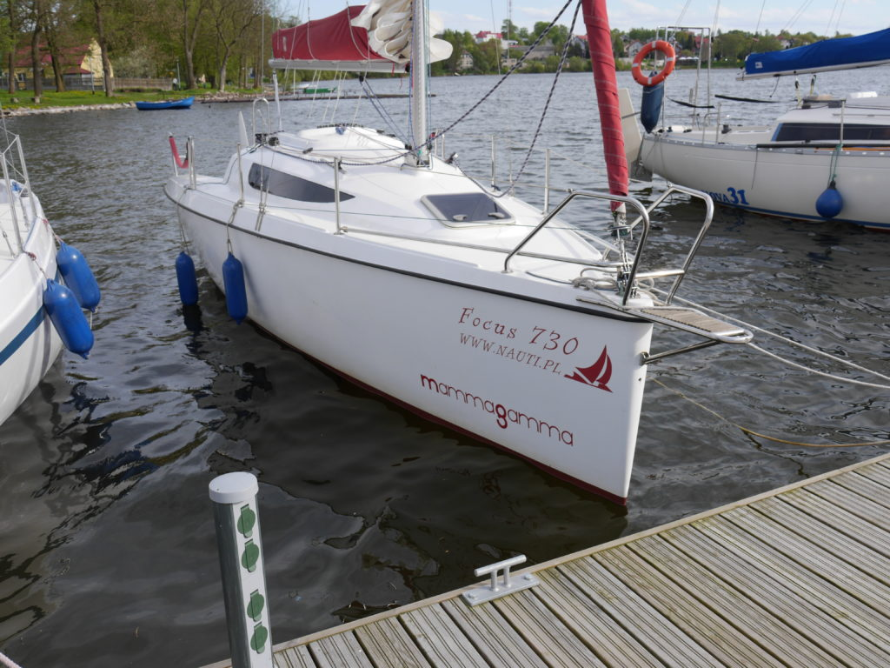

Focus730

Opis:
Focus 730 to bezpieczny, łatwy w obsłudze i niezawodny jacht przeznaczony zarówno do regat jak i żeglugi rodzinnej. Każdy jacht wewnątrz wyposażony jest w: środki bezpieczeństwa (kamizelki, koła z certyfikatem, apteczki pierwszej pomocy), kuchenkę (pełna zastawa stołowa, garnki) i zlewozmywak, wodę, światło, gaz, chemiczne WC, radio, sześć pełnowymiarowych koji; a na zewnątrz: silnik, lazyjack, bramka do kładzenia masztu.
Zdjęcie Pokładu
Dane techniczne:
długość całkowita 7,35 m
szerokość 2,50 m
zanurzenie min./max 0,30 m/1,35m
ciężar transportowy 1500 kg
balast wewnętrzny 350 kg / 250 kg
waga miecza 100 kg / 200 kg
wysokość masztu 9 m
grot 16 m²/16,5 m²
fok 9 m²/ 10,5 m²
ilość osób 5-6
Żagiel